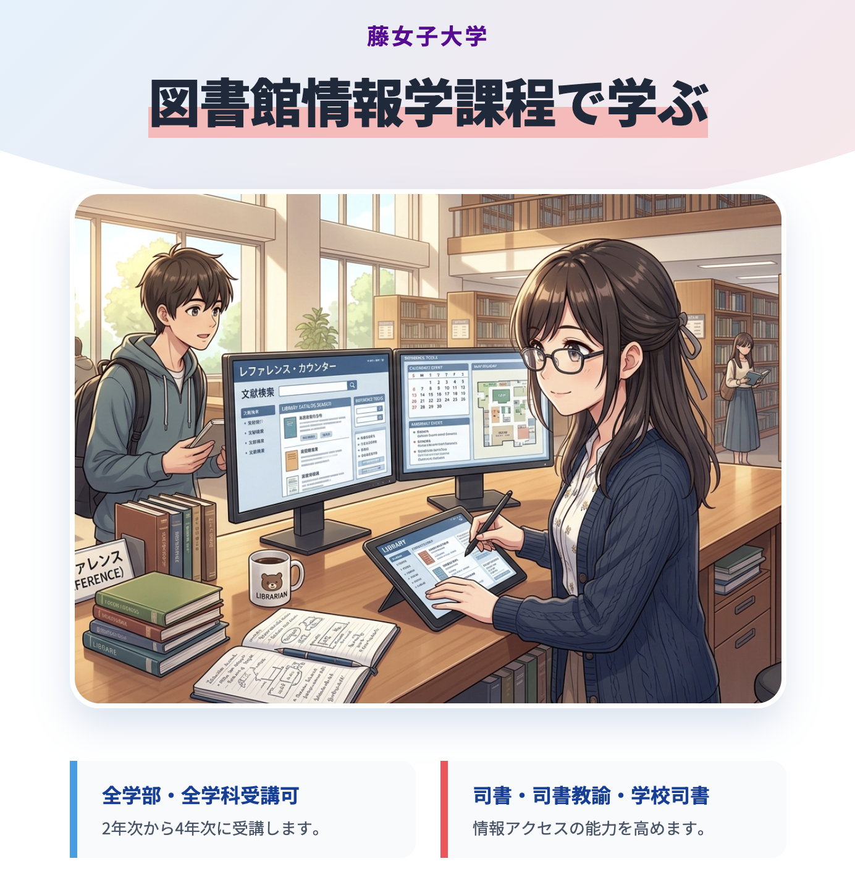
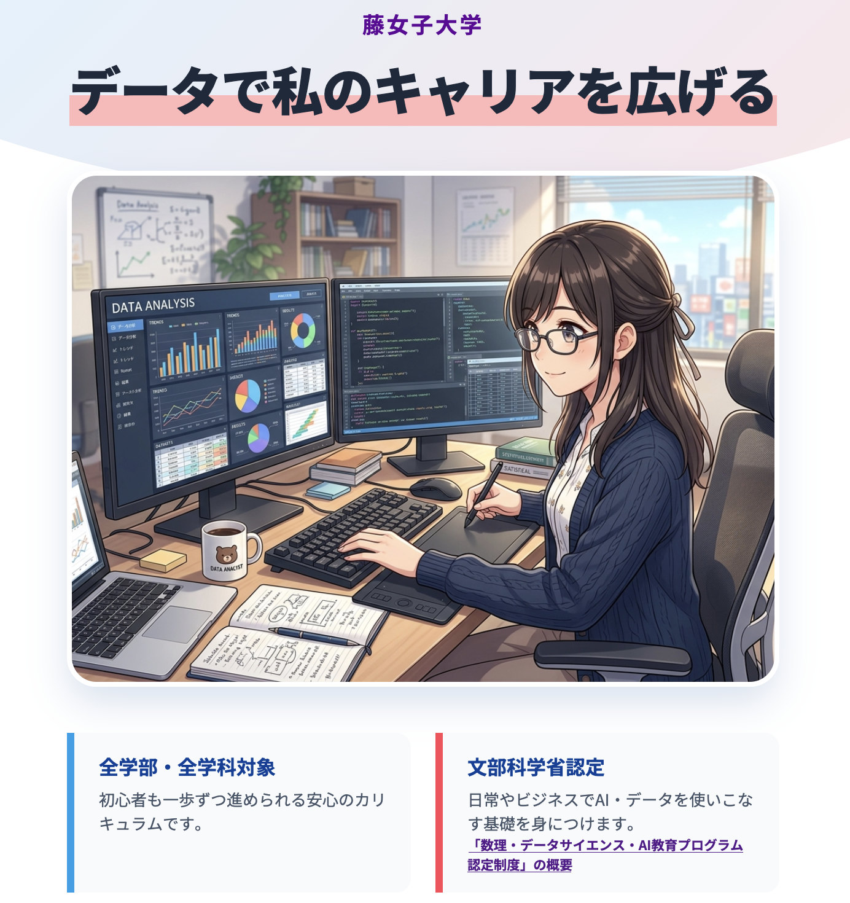
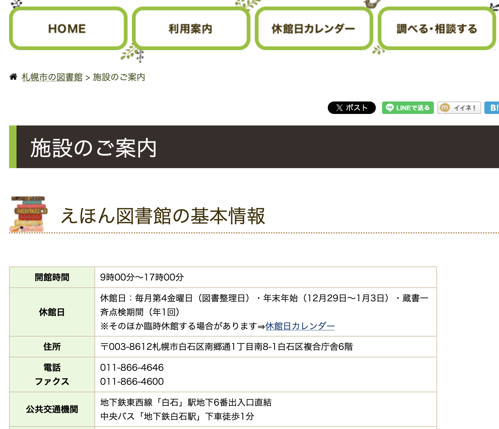
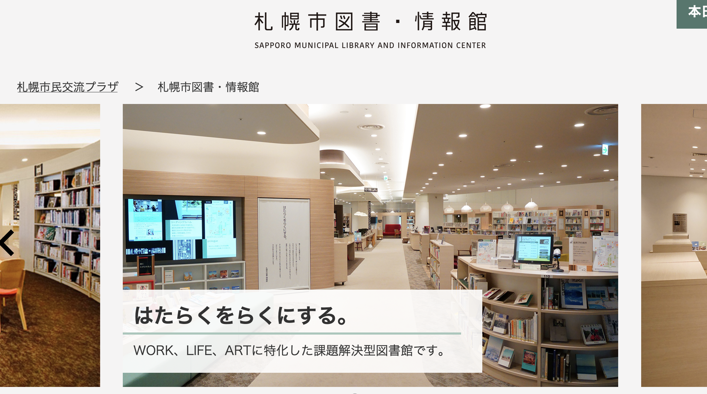
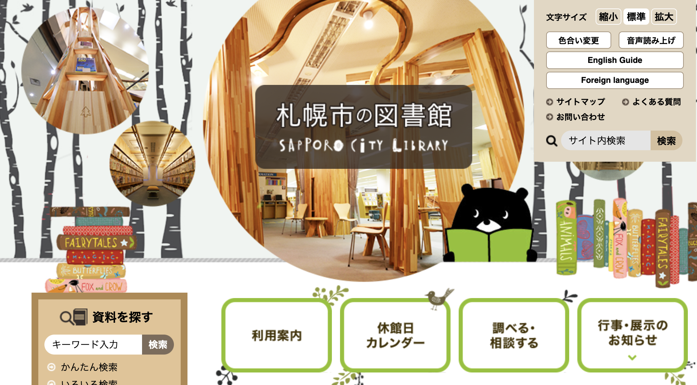

 |
 |
|---|
You can select from different transitions, like:
None -
Fade -
Slide -
Convex -
Concave -
Zoom
(escキーで全体表示。sキーでスピーカーノートを別ウィンドウ表示。)
| 平 井 孝 典 | |
|---|---|
| 専攻 | 図書館情報学・情報社会学（アーカイブズ学） |
| 担当 | 図書館情報学課程科目「図書館情報技術論」など |
| 1 | 図書館で働きますか |
| 2 | 図書館情報学課程を受講するには |
| 3 | 図書館とは・図書館員とは |
図書館のような情報を扱う施設での仕事、興味がありますか？札幌市中央図書館などの公共図書館員になるには、司書資格を取得し、採用試験に通過する必要があります。
藤女子大学では、学科の勉強をしっかりこなしながら司書資格の単位を修得し、司書としてスタートできるよう準備を整えることができます。
日頃からできるアプローチ：



| 情報アクセスのツールを作成 | |
| （WebAPIの活用） |
これからの図書館と、
求められる役割について
図書館員は、単に本を運ぶ・並べることが仕事ではありません。本質的な仕事は「情報の案内（情報アクセスのお手伝い）」です。
公共図書館は、単なる無料の貸本屋ではありません。子育て、ビジネス、郷土史研究など、人々が必要とするあらゆる情報へアクセスする重要な拠点です。
全国で毎年約1万人程度が司書（任用資格）を取得しますが、新卒での専任採用は非常に狭き門です。最初は非常勤職員としてキャリアをスタートし、複数の研修を経て専任職員を目指すケースも多く、これは学芸員やアーキビストといった他の専門職と同様の傾向です。
※ 詳しい現状やステップについては、入学後の1年次（4月・11月）の説明会で詳しくお話しします。
卒業生は公務員や一般企業など、幅広い分野で活躍しています。特に最近はIT関係の分野に進む人が増えています。
必修科目「図書館情報技術論」では、データベース構築のための SQL や、Webの動的処理に欠かせないスクリプト言語（PHP など）を学びます。ここで習得するデータベースの仕組みの理解は、一般ビジネスの場でも強力な強みとなります。
藤女子大学では、2学部全学科合わせて毎年30名〜50名程度が資格（司書・司書教諭・学校司書スキル含む）を取得しています。
本課程のグループ学習では、「他学科・他学部の学生」が共に机を並べます。異なる視点を持った仲間との意見交換や共同作業は、非常に刺激的でおもしろいと好評です。
ご清聴ありがとうございました